|
|
|
|Instituto Tecnológico de Costa Rica|Escuela de Matemática| M. Sc. Geovanni Figueroa M. |
1 2
3 4
5 6 7
8 9
10 11
12 13
14 15 16
|
|
Sistemas de ecuaciones diferenciales El siguiente ejemplo muestra el uso de la transformada de Laplace en la solución de sistemas de ecuaciones diferenciales.
Ejemplo
con las condiciones 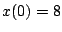, 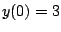.
Solución
o agrupando
Ahora usemos la regla de Cramer para resolver el sistema anterior
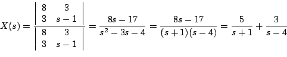
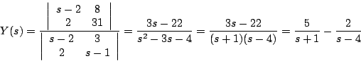
De donde obtenemos que
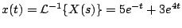
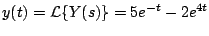
Ejemplo
Solución
De donde obtenemos el siguiente sistema:
Tomando transformada de Laplace y usando las condiciones iniciales, 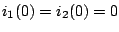, obtenemos que
Observe que de la primera ecuación 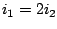, de modo que la segunda ecuación se transforma en
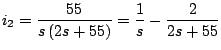
Entonces
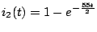
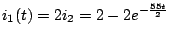
y
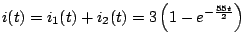
|